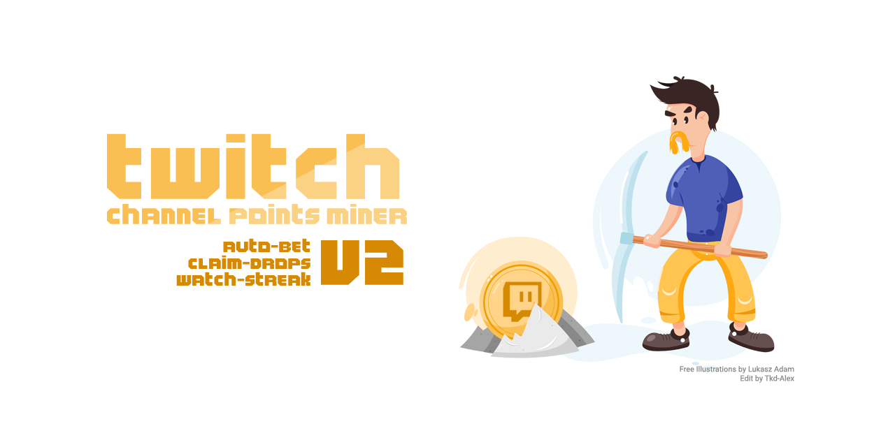

Twitch Channel Points Miner
Live Analytics Dashboard
Kaggle Sync: Active (Every 30m)
Last update: Loading...
Refresh
Banner

TOTAL CHANNEL POINTS
---
Across all tracked streamers
24H POINTS MINED
---
Net points farmed in last 24h
TRACKED STREAMERS
---
--- active today
TOP EARNER
---
Leading channel balance
Select Streamer
twitch.tv
--- pts
+--- 24h
+--- all-time
---
👁️
0
🎁
0
🔥
0
⚔️
0
🎲
0
×
All
Active Today
Top 10
Points descending
Points descending
Points ascending
Today's gain descending
Name ascending
Name descending
Last activity descending
Last activity ascending
Today
24h
7d
30d
All Time (∞)
to
Annotations
Dark Mode
Events
Log
Recent Claims & Points Activity Feed
Latest 50 events
Time
Channel
Event / Reason
Points
Balance
No events recorded yet.
Miner Console Log
⏸️ Pause
Live miner output will stream here when enabled in logger_settings (save=True).